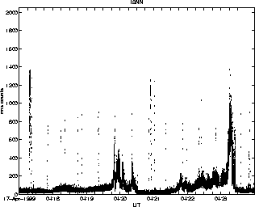

These data show that SSLS failed during April 19th eruption & that SSLN was badly clipped. WTUG does not show the eruptive sequences very well. ISNN, SSLW, ISTK & BRPK operated well during the most critical period and did not clip appreciably.

Distances: SSLS 5.3, SSLN 6.5, SSLW 10.1, ISNN 14.8, ISTK 17.0, BRPK 19.0, WTUG 28.9